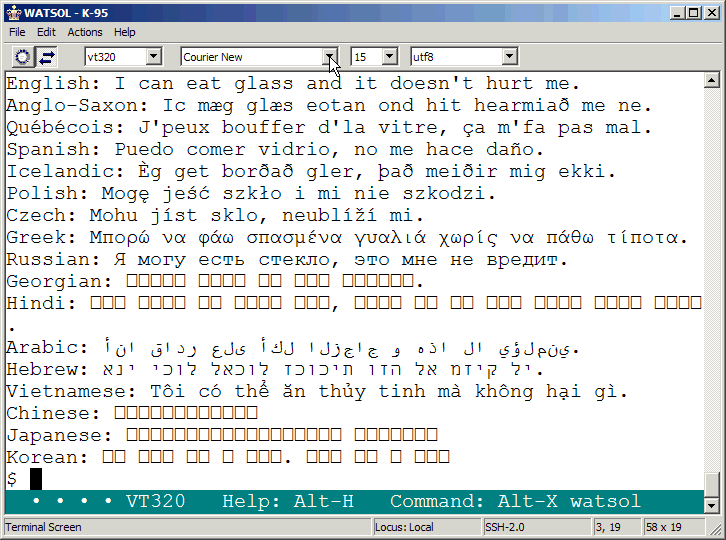
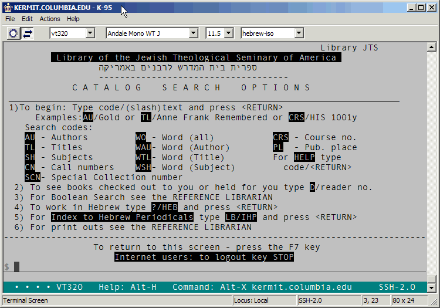
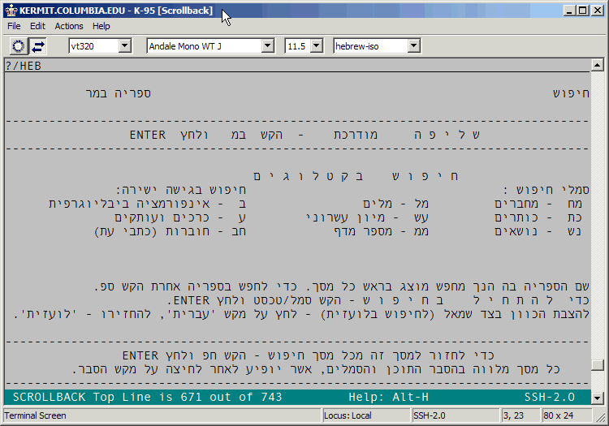
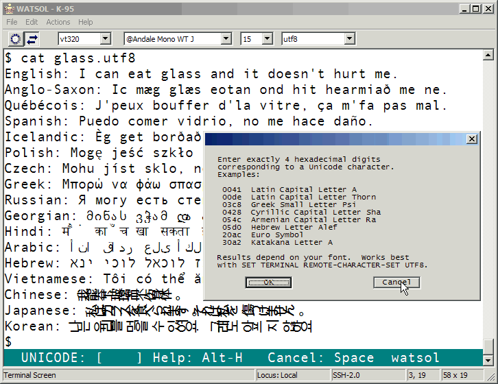
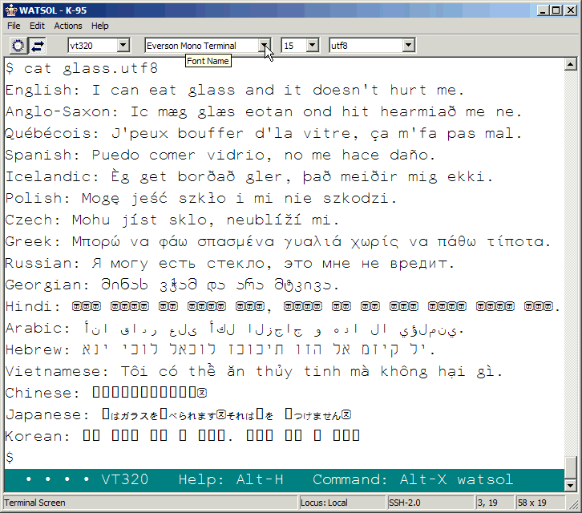

This graphic illustrates how Kermit 95, given a sufficiently populated monospaced font (such as Agfa Monotype Andale Mono 64 WT J, shown here), can display text in many languages and writing systems in a terminal session. The quality of the display and the appearance of each character, of course, depend on the font and your screen resolution. Kermit's host character set in this case is UTF-8 (a form of Unicode), which is the only character set capable of encompassing such a comprehensive repertoire. Notes:
For comparison, here is a screen shot with a different font, Courier New, which comes standard on most Microsoft operating systems, and can be downloaded from Microsoft (via archive.org) in case you don't have it:

As you can see, the repertoire is smaller. Now, for Right-to-Left languages:

This is a shot of the English/Hebrew/Yiddish bibliographic system called ALEPH from Hebrew University of Jerusalem, which runs on VMS with DEC VT terminal emulation, using ISO 2022 character-set designation and invocation sequences to switch between ASCII and the ISO 8859-8 Latin/Hebrew alphabet (shown as "hebrew-iso" in the character-set selection combo box). Here Kermit 95 converts between the host encoding and the native Unicode encoding on Windows. The main page is in English with a Hebrew subheading. Entering "?/HEB" switches to Hebrew mode:

in which we have a Hebrew menu and search screens, and where typing Hebrew letters (which can be done with the regular Windows Hebrew keyboard driver or with Kermit's built-in Hebrew keyboard mode) echoes from right to left (and Roman from left to right), all under control of the host application, which works by positioning each character on the screen with escape sequences.
As to typing Unicode characters at the keyboard . . . Keyboard input methods are evolving and changing all the time. Clearly, no single keyboard can be expected to have all the characters of all the world's writing systems; thus many fancy schemes are devised to allow (for example) input of Chinese characters on a Roman keyboard. There is, however, a very straightfoward (if not especially convenient) method for entering any character, illustrated here:

Kermit 95 has always had a Compose key (Alt-C by default), usable for composing accented Roman characters. Now it also has a Unicode key (assigned by default to Alt-N, also accessible from the Actions menu). When you press the Unicode key, you get a mini-dialog in the status line, in which you may type exactly 4 hexadecimal digits (0-9, a-f, case of letters doesn't matter), which denote a Unicode character in the Base Multilingual Plane. Kermit converts this to whatever character set is in use on the host and sends the result. Of course, you need a Unicode code chart to know which codes correspond to what characters. For this you can use The Unicode Standard itself (a book, now online) or the online material at the Unicode Consortium. The screenshot was produced by pressing Alt-N to enter Unicode Compose mode and then Alt-H to get context-sensitive help.
Finally, here's a shot of the original sample text using the new Everson Mono Terminal font that was previously packaged with K95 2.x:

Note that the Hindi, Chinese, and Korean are missing; the Japanese shows only Kana (no Kanji), but the rest is there, including the Runes, Armenian, and Georgian missing from Courier New. The spacing is a bit looser than Courier or Andale Mono (hence no descenders are clipped) and the effect lighter.
[ K95 Home ] [ Kermit Home ] [ Unicode Consortium ]